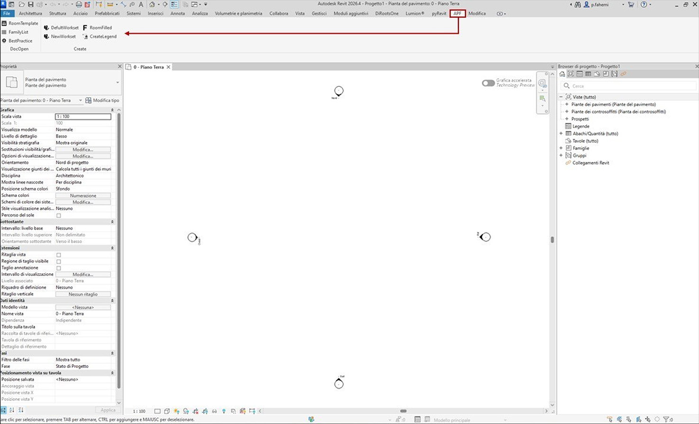

Architecture is data. I build the systems that make it speak.
Automating repetitive BIM tasks through scripting and parametric workflows, reducing manual effort and standardizing outputs across disciplines.
Problem: Repetitive manual tasks consume valuable project time, while manual data handling increases the risk of inconsistencies between BIM models, project documentation, schedules, and deliverables.
Result: By leveraging Dynamo, pyRevit, Python, and other automation tools, repetitive workflows can be automated, data synchronization improved, and consistency maintained across BIM models and project documentation, reducing errors while increasing efficiency.
Leveraging AI tools to accelerate design exploration, generate photorealistic visualizations, and streamline documentation workflows.
Problem: Traditional design exploration, visualization, and documentation workflows are often time-consuming, requiring multiple iterations across different software while repetitive production tasks slow project delivery.
Result: Leveraging AI tools accelerates concept development, generates high-quality photorealistic visualizations, and streamlines documentation workflows, enabling faster design iterations, improved communication, and more efficient project delivery.
Structuring BIM data for interoperability, rule-based model checking and live reporting dashboards for project stakeholders.
Problem: Poorly structured BIM data and inconsistent information standards reduce interoperability, hinder automated quality control, and make project reporting time-consuming and unreliable.
Result: Structuring BIM data using standardized information requirements enables seamless interoperability, rule-based model checking, and live reporting dashboards, improving data quality, project transparency, and informed decision-making.
Building end-to-end visualization workflows from BIM model to photorealistic render, integrating AI post-processing for final outputs.
Problem: Architectural visualization workflows often require multiple disconnected software platforms, repetitive file transfers, and extensive manual post-processing, resulting in longer production times and inconsistent outputs.
Result: An end-to-end visualization workflow seamlessly transforms BIM models into photorealistic renders, integrating AI-assisted post-processing to accelerate production, enhance visual quality, and ensure consistent deliverables.
I don't just use software, I create workflows that make software work together.
Converting room data to a single A4 sheet for each room through Dynamo.
Problem: Room data was scattered across multiple Revit schedules with no unified, printable output per room — coordinators had to manually compile information for each space.
Result: A fully automated pipeline that generates one formatted A4 PDF for each room, using live data directly from the Revit model. Dynamo extracts the room information, while a Python node structures the data into an HTML file and saves it to a designated directory. The HTML files are then converted into individually formatted PDF sheets, creating a complete and automated room documentation workflow.
Professional visualization setup from Revit to chatGPT.
Problem: Creating highly realistic architectural renders in less time.
Result: The workflow begins with a selected Revit scene, which is rendered and then annotated in Photoshop to indicate the objects or elements that need to be added or modified. Claude AI is then used to generate a detailed prompt based on these annotations. The annotated image and the AI-generated prompt are subsequently provided to ChatGPT to produce the final visualization.
Short description of what this workflow does and why it was built.
Problem: Placeholder — describe the challenge this workflow solves.
Result: Placeholder — describe the measurable outcome.
